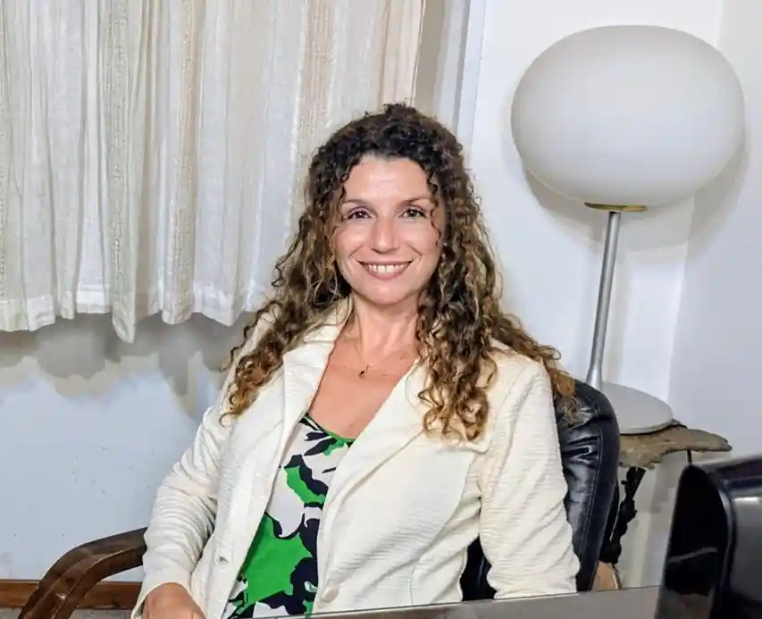

Mediazione familiare
Uno spazio di confronto e dialogo per accompagnare le famiglie nei momenti di cambiamento e favorire una comunicazione più efficace.
Riportare il dialogo
dove sembrava impossibile.
Mediazione, relazione e strumenti espressivi per favorire ascolto, consapevolezza e cambiamento.
Credo che ogni individuo ed ogni famiglia possieda risorse e possibilità di evoluzione: il mio contributo consiste nell'accompagnarle affinché possano riconoscerle e trasformarle in nuove opportunità di benessere.

Sono pedagogista e mediatrice familiare e da oltre vent'anni opero nei contesti sanitari e socio-educativi, accompagnando persone, coppie e famiglie nei momenti di cambiamento e complessità relazionale: separazioni, conflitti generazionali, eredità e riorganizzazioni familiari.
Attraverso percorsi di gestione alternativa del conflitto, supporto alla genitorialità e Parent Training, integro mediazione familiare, pedagogia e strumenti teatrali per favorire consapevolezza, dialogo e costruzione di nuovi equilibri.
Nel 2011 ho fondato un'associazione dedicata a progetti formativi e di prevenzione per il benessere di adulti, bambini e ragazzi. Ho inoltre svolto attività di docenza e formazione specialistica, pubblicando contributi in ambito sanitario e riabilitativo, con particolare attenzione alla teatro-terapia.
Credo nella possibilità di ogni persona e di ogni famiglia di riconoscere le proprie risorse, affrontare il cambiamento e costruire nuove possibilità di benessere.
Quattro ambiti di intervento che integrano mediazione familiare, pedagogia e strumenti espressivi.
Uno spazio di confronto e dialogo per accompagnare le famiglie nei momenti di cambiamento e favorire una comunicazione più efficace.
Interventi rivolti ai genitori finalizzati allo sviluppo di strategie educative efficaci, alla gestione delle difficoltà quotidiane e al rafforzamento delle competenze genitoriali.
Un percorso orientato a sostenere la collaborazione tra genitori e a promuovere decisioni condivise nell'interesse dei figli.
Percorsi di accompagnamento rivolti ai genitori per valorizzare risorse educative e competenze relazionali.
È un metodo che aiuta a gestire i conflitti, migliorare il dialogo e ridefinire le relazioni.
Strutturato per ritrovare un canale di comunicazione e costruire accordi sostenibili.
Non offro giudizi né soluzioni preconfezionate: creo le condizioni perché siate voi, insieme, a trovare un nuovo equilibrio.
Ci sono momenti in cui il dialogo si interrompe e trovare un accordo diventa difficile. La mediazione offre uno spazio neutrale per ascoltarsi, chiarire i bisogni e affrontare ciò che sta cambiando.
Un luogo terzo dove tutti hanno lo stesso diritto di parola.
Uno spazio protetto in cui potersi confrontare con rispetto.
La mediazione è un percorso scelto e costruito insieme.
Quando ci sono minori, il loro benessere guida le decisioni.
Per affrontare le decisioni della separazione con maggiore chiarezza, soprattutto quando è difficile trovare un punto d'incontro.
Per continuare a essere genitori insieme, anche quando la relazione di coppia è cambiata.
Quando visioni, aspettative e bisogni diversi tra genitori e figli adulti rendono difficile comunicare.
Per affrontare le questioni legate a un'eredità senza lasciare che le differenze diventino fratture familiari.
Quando il dialogo si è interrotto e può essere utile uno spazio neutrale per provare a ritrovarlo.
Quando bisogna decidere insieme come prendersi cura di un genitore o di una persona cara e le posizioni diventano diverse.
I nomi sono modificati per tutela della riservatezza. Ogni testimonianza è stata condivisa con consenso esplicito.
Siamo arrivati con la sensazione che non ci fosse più nulla da dirsi. Ne siamo usciti con un accordo e con un rispetto reciproco che pensavamo di aver perso.M. e P.Separazione consensuale
La mediazione non ha cancellato il passato, ma ci ha permesso di smettere di portarlo come un peso.Carlotta R.Mediazione genitore-figlio
Pensavo che l'eredità di nostra madre ci avrebbe divisi per sempre. Avere una persona terza che teneva il filo del discorso ci ha permesso di decidere insieme, senza rancore.Famiglia T.Successione tra fratelli
Non riuscivamo a parlare di nostro figlio senza litigare. Dopo qualche incontro abbiamo scritto insieme un calendario che finalmente funziona per tutti e tre.S. e D.Coordinamento genitoriale
Compila il modulo o scrivimi direttamente. Se desideri ricevere informazioni o fissare un primo colloquio conoscitivo, sarò lieta di accompagnarti nell'individuazione del percorso più adatto.